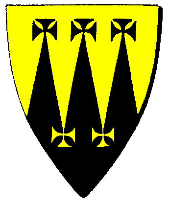

| Übersicht,
Anschläge und Stammtisch (RPG) |
|
Die Rückkehr
|
| Edwin MacKinnon (RIP) |
Vernehmt, was zu berichten ist!
Die Rueckkehr naht. Aeonen sind vergangen seit die Alte Welt unterging und die Herrschenden mit ihr. Raum und Zeit verschmolzen und nur das Bewusstsein Weniger ueberdauerte die Zeiten.
Doch die Rueckkehr naht - wir kommen. Bären und Bärenbrüder werden wieder vereint sein.
Könige, Stadtfürsten, Herolde und Diplomaten der Alten Welt - altes Bewusstsein erneuert sich, die Neue Welt erfährt Altes. Gründerväter und Krieger, Bauern und Handwerker, Krieger und Magier - sie werden wieder eins sein.
Die Zeit kommt - wir kommen.
Edwin MacKinnon
Zur 21. Stunde am 41.Blumenmond im Jahre 444 |
25.11.10 18:41
 |
|
| Biba Butzemann (RIP) |
*gähnt*
*zu einem seiner Leibeigenen*
Hol mir meinen Bärentöter... es ist Jagdzeit...
Sir Thor von Asgard,
Vorsteher von Forsvik i Västra Götaland
Zur 1. Stunde am 42.Blumenmond im Jahre 444 |
25.11.10 19:44
|
|
Fabius Alagos
  |
Seid Willkommen Bär,
die Taten der alten Helden sind nicht vergessen. Doch wisset unsere Welt liegt im Krieg und der kalte Stahl zählt mehr als Worte und Geschichten.
Ihr werdet Euch neu beweisen müssen.
Wir sind bereit.
Weiser Fabius Alagos,
Vorsteher von Hafenbastei Sturmbrecher
Zur 2. Stunde am 42.Blumenmond im Jahre 444 |
25.11.10 19:55
|
|
| Gwydion de Ville (RIP) |
Märchen über die Vergangenheit gibt es mehr als genug. Sie spiegeln nicht das Hier und Jetzt wieder. Das ist es was zählt und nicht Geschichten über vor tausenden von Jahren vergangenen Nationen. Das sind ja nicht einmal unsere Großväter. Spart euch also eine große Ankündigung und lebt im hier und jetzt. Denn das Anbeten der Asche bringt euch allerhöchstens Asche.
Sir Gwydion de Ville,
Anführer der glorreichen Nation "S.T.U.R.M.",
Hahn im Korb
Zur 17. Stunde am 42.Blumenmond im Jahre 444 |
25.11.10 23:20
|
|
Alberix, Sohn des Duglim
  |
Ich weiss zwar nicht von welcher alten Welt Du redest aber wenn mit ihr auch die alten Werte von Ehre, Gerechtigkeit, Respekt und Achtung ebenfalls wieder aufleben, dann bete ich zu den Lichtsieben das Du recht haben mögest.
Veteran Alberix, Sohn des Duglim,
Vorsteher von Fels
Zur 17. Stunde am 42.Blumenmond im Jahre 444 |
25.11.10 23:33
|
|
Phooka
  |
na das hört sich ja juut an.
hoffe mal, ihr nehmt euch hier des gesindels an
:-)
Freiherr Drejo,
Vorsteher von Lothianis Coast
Zur 2. Stunde am 55.Blumenmond im Jahre 444 |
28.11.10 20:48
|
|
Übersicht,
Anschläge und Stammtisch (RPG)
|